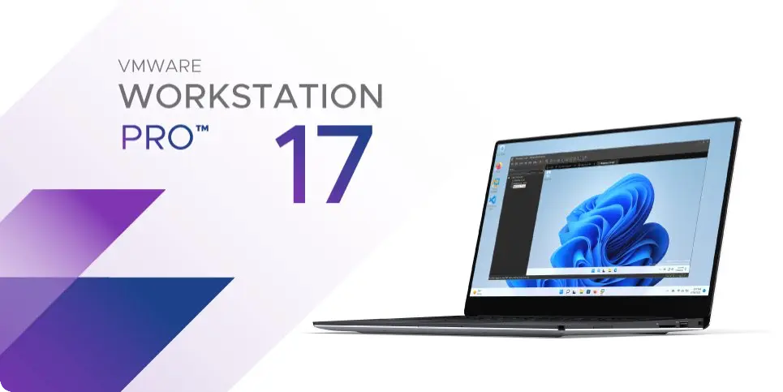
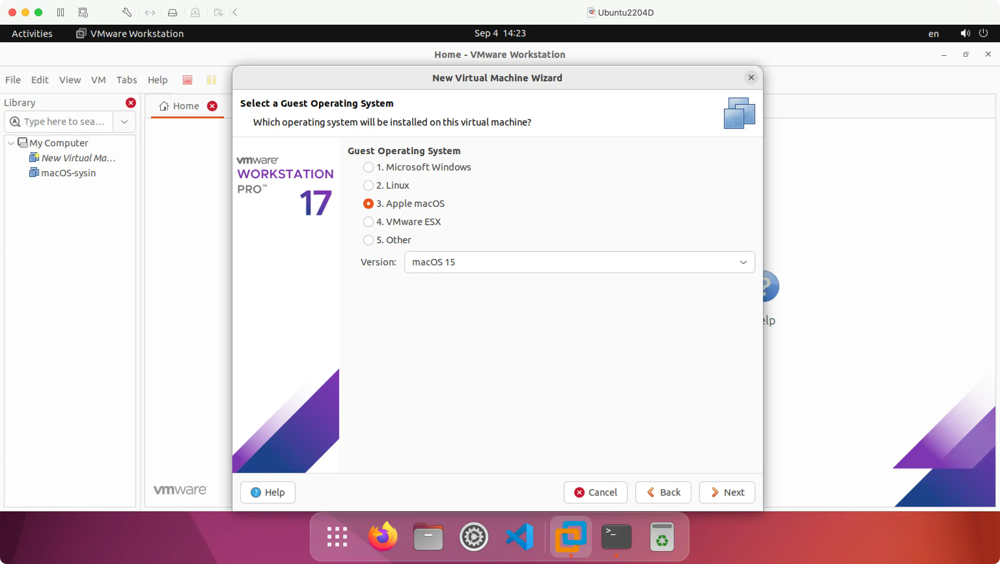

请访问原文链接：VMware Workstation Pro 26H1 for Windows & Linux - 领先的免费桌面虚拟化软件 查看最新版。原创作品，转载请保留出处。
作者主页：sysin.org
桌面 Hypervisor
VMware Workstation Pro
VMware Workstation Pro 是行业标准桌面 Hypervisor，使用它可在 Windows 或 Linux 桌面上运行 Windows、Linux 和 BSD 虚拟机。

VMware Fusion 和 Workstation 现在对所有用户免费
2024 年 11 月 11 日，VMware by Broadcom 宣布 VMware Fusion 和 Workstation 现在对所有用户免费。
我们很高兴地宣布一项重大变化，它反映了我们致力于使 VMware Fusion 和 VMware Workstation 比以往任何时候都更易于访问的承诺。从 2024 年 11 月 11 日开始，这些功能强大的桌面虚拟机管理程序产品将免费提供给所有人，包括商业、教育和个人用户。
有哪些变化，这对当前订阅的客户意味着什么？
VMware Fusion 和 VMware Workstation 都将从付费订阅模式过渡，这意味着您现在可以免费使用这些工具。这些产品的付费版本（Workstation Pro 和 Fusion Pro）不再可供购买。
如果您目前签订了商业合同，您可以高枕无忧，因为您的协议将一直有效，直到您的期限结束。根据您的合同，您将继续获得完整级别的服务和企业级支持 (sysin)。我们承诺在您的整个合同期限内保持高标准的支持。
这些更改如何影响 Desktop Hypervisor 的当前支持和功能？
免费版将包含您从付费版中依赖的所有功能。您将拥有成功完成项目所需的工具，而不会受到任何影响。
对于签订有效支持协议的客户，您仍然可以通过我们的标准渠道获得支持，无论是通过我们的支持门户还是直接联系我们的支持团队。当前合同结束后，您可以继续使用该产品。但是，请注意，将不再提供用于故障排除的支持票证。所有用户都可以访问丰富的在线资源，包括文档、用户指南和社区论坛，以帮助您充分利用桌面虚拟机管理程序体验。
在桌面上构建虚拟机
跨一系列不同的设备、平台和云环境构建、测试和演示软件。IT 专业人员、开发人员和企业每天都依赖 Workstation Pro 为他们的项目和客户提供支持 (sysin)。借助 Workstation Pro，您可以轻松运行复杂的本地虚拟环境，从而在同一桌面 PC 上模拟操作系统、平台和云环境。
在单台 PC 上运行虚拟机和容器
通过新的 vctl CLI 工具使用虚拟机隔离、虚拟网络连接和虚拟资源选项部署本地 OCI 容器和 Kubernetes 集群。
可针对任何平台进行开发和测试
在开发和测试中使用 Workstation Pro 修复更多错误并按时交付高质量代码。在桌面 PC 上虚拟化目前可用的几乎所有 x86 操作系统。
享受嵌入式 vSphere 和 ESXi 支持
将 ESXi 和 vCenter 作为虚拟机在桌面上运行 (sysin)，并连接到远程 vSphere 环境，以便快速访问虚拟机并执行基本管理任务。
运行安全的隔离桌面
运行具有不同隐私设置、工具和网络连接配置的辅助安全桌面，以实现在线保护，或保存 “快照” 以便日后还原。
VMware Workstation 17.6 Pro 新增功能
VMware Workstation Pro 17.6.4 | 15 JUL 2025 | Build 24832109
新增功能
- 此版本解决了 CVE-2025-41236、CVE-2025-41237、CVE-2025-41238 和 CVE-2025-41239。有关这些漏洞及其对 B 公司产品的影响的更多信息，请参阅 VMSA-2025-0013。
- 此版本解决了 CVE-2025-2884。B 公司已评估此问题的严重程度处于中等范围内。
已解决的问题
当虚拟机正在关机且快照行为选择了“询问我”选项时，VMware Workstation Pro 可能会返回错误消息。
在虚拟机关机操作期间，如果在 VM > Settings > Options > Snapshots 中选择了 “Ask me”（询问我）选项，则在调用后端异步函数之前未对某个特定指针进行验证 (sysin)。结果，该指针在虚拟机关机过程中变得无效并导致访问冲突，从而可能出现如下错误消息。此问题已在此版本中修复。
1
2vmx [msg.log.error.unrecoverable] VMware Workstation unrecoverable error: (vmx)
vmx Exception 0xc0000005 (access violation) has occurred
VMware Workstation Pro 17.6.3 | 4 MAR 2025 | Build 24583834
新增功能
- 17.6.3 版本解决了 CVE-2025-22224 和 CVE-2025-22226。有关这些漏洞及其对博通产品的影响的更多信息，请参阅 VMSA-2025-0004。
- VMware Workstation Pro 不再需要许可证密钥，现在可用于商业、教育和个人使用。
- VMware Workstation Pro 17.6.3 提供客户请求的各种错误修复。
已解决的问题
启动虚拟机时，VMware Workstation Pro 可能会崩溃
启动虚拟机时，VMware Workstation Pro 可能在某些系统上崩溃。此问题已在 VMware Workstation Pro 17.6.3 中解决。当内核版本高于 5.14.0-432 时，VMware Workstation Pro 在 Centos 9 Stream 上安装失败
如果您尝试在内核版本高于 5.14.0-432 的 Centos 9 Stream 主机上安装 VMware Workstation Pro，您将收到编译错误。该问题已在 VMware Workstation Pro 17.6.3 中解决。虚拟机在 Windows 11 主机解锁后变得无响应
在 Windows 11 主机上安装虚拟机后锁定或解锁主机，虚拟机将无响应。此问题已在 VMware Workstation 17.6.3 中解决。
VMware Workstation Pro 17.6.2 | 17 DEC 2024 | Build 24319023
免费许可模式
VMware Workstation Pro 现在可免费用于商业、教育和个人用途。您不再需要许可证密钥即可访问 VMware Workstation Pro 功能。Bug 修复：VMware Workstation Pro 17.6.2 提供了客户要求的各种错误修复。
已解决的问题如下：- 在 Snapshot Manager 中执行快照操作后，VMware Workstation for Linux 崩溃
通过 Snapshot Manager 获取、删除或还原快照可能会导致 VMware Workstation for Linux 崩溃。此问题已在 VMware Workstation 17.6.2 中得到解决。 - 无法在 Linux 客户机操作系统上拍摄和使用快照
在 Linux 客户机操作系统上拍摄或尝试使用快照会导致 Workstation 停止响应 (sysin)。此问题已在 Workstation 17.6.2/Fusion 13.6.2 中得到解决。 - 解锁设备后，Windows 11 主机上的虚拟机变得无响应
使用 Windows 11 主机上安装的虚拟机锁定或解锁设备后，虚拟机将变得无响应。 - kcompactd 内核进程会导致 Linux 主机上的虚拟机变得无响应
由于 kcompactd 内核进程，Linux 主机上的虚拟机最终会变得无响应。
- 在 Snapshot Manager 中执行快照操作后，VMware Workstation for Linux 崩溃
VMware Workstation Pro 17.6.2 | 17 DEC 2024 | Build 24319023
免费许可模式
VMware Workstation Pro 现在可免费用于商业、教育和个人用途。您不再需要许可证密钥即可访问 VMware Workstation Pro 功能。Bug 修复：VMware Workstation Pro 17.6.2 提供了客户要求的各种错误修复。
已解决的问题如下：- 在 Snapshot Manager 中执行快照操作后，VMware Workstation for Linux 崩溃
通过 Snapshot Manager 获取、删除或还原快照可能会导致 VMware Workstation for Linux 崩溃。此问题已在 VMware Workstation 17.6.2 中得到解决。 - 无法在 Linux 客户机操作系统上拍摄和使用快照
在 Linux 客户机操作系统上拍摄或尝试使用快照会导致 Workstation 停止响应 (sysin)。此问题已在 Workstation 17.6.2/Fusion 13.6.2 中得到解决。 - 解锁设备后，Windows 11 主机上的虚拟机变得无响应
使用 Windows 11 主机上安装的虚拟机锁定或解锁设备后，虚拟机将变得无响应。 - kcompactd 内核进程会导致 Linux 主机上的虚拟机变得无响应
由于 kcompactd 内核进程，Linux 主机上的虚拟机最终会变得无响应。
- 在 Snapshot Manager 中执行快照操作后，VMware Workstation for Linux 崩溃
VMware Workstation Pro 17.6.1 | 2024 年 10 月 10 日 | 内部版本 24319023
已解决的问题
从 ISO 映像文件创建新虚拟机时，VMware Workstation 无法识别 Windows 11 24H2
如果从 Windows 11242 ISO 映像文件创建虚拟机，VMware Workstation 会改为识别 Windows Server 2025 ISO 文件。该问题已解决。
打开虚拟机电源失败并出现“VMware Workstation 17.6 - 不可修复的错误: (svga) svga 异常 0xc0000005 (
VMware Workstation 17.6 - unrecoverable error: (svga) svga Exception 0xc0000005)”错误在通过 VMware Workstation 首选项中的允许为所有虚拟机控制台启用硬件加速停用并激活 3D 图形功能情况下打开虚拟机电源失败，并显示“VMware Workstation 17.6 - 不可修复的错误: (svga) svga 异常 0xc0000005 (
VMware Workstation 17.6 - unrecoverable error: (svga) svga Exception 0xc0000005)”错误。无法在非英语主机系统上安装或升级 VMware Workstation 17.6
如果尝试在区域设置不是英语的主机系统上安装或升级 VMware Workstation，则会显示 MSI 弹出错误。
作为主机的 Workstation Pro 17.6 不支持内核版本高于 5.14.0-432 的 CentOS 9 Stream
作为主机的 Workstation Pro 17.6 不支持内核版本高于 5.14.0-432 的 CentOS 9 Stream。
VMware Workstation Pro 17.6 | 2024 年 9 月 3 日 | 内部版本 24238078
vmcli 简介：
vmcli 是 VMware Workstation Pro 附带的命令行工具，允许用户直接从 Linux 或 macOS 终端或者 Windows 命令提示符与 Hypervisor 进行交互。使用 vmcli，您可以执行各种操作，例如创建新虚拟机、生成虚拟机模板、打开虚拟机电源，以及修改各种虚拟机设置。此外，也可以创建脚本来按顺序运行多个命令。有关详细信息，请参阅“使用 VMware Workstation Pro”。
支持新的客户机操作系统：
- Windows Server 2025
- Windows 11 版本 23H2
- Ubuntu 24.04
- Fedora 40
支持新的主机操作系统：
- Windows Server 2025
- Windows 11 版本 23H2
- Ubuntu 24.04
- Fedora 40
虚拟机模板 OVF
本站原创 OVF，适用于 VMware 虚拟化。
- AlmaLinux 10 x86_64 OVF (sysin) - VMware 虚拟机模板
- AlmaLinux 9.5 x86_64 OVF (sysin) - VMware 虚拟机模板
- AlmaLinux 8.10 x86_64 OVF (sysin) - VMware 虚拟机模板
- Rocky Linux 10 x86_64 OVF (sysin) - VMware 虚拟机模板
- Rocky Linux 9.5 x86_64 OVF (sysin) - VMware 虚拟机模板
- Rocky Linux 8.10 x86_64 OVF (sysin) - VMware 虚拟机模板
- CentOS 8.5 x86_64 OVF (sysin) - VMware 虚拟机模板
- CentOS 7.9 x86_64 OVF (sysin) - VMware 虚拟机模板
- Debian 13.5 x86_64 OVF (sysin) - VMware 虚拟机模板
- Debian 12.5 x86_64 OVF (sysin) - VMware 虚拟机模板
- Debian 11.5 x86_64 OVF (sysin) - VMware 虚拟机模板
- Debian 10.13 x86_64 OVF (sysin) - VMware 虚拟机模板
- Ubuntu 26.04 LTS x86_64 OVF (sysin) - VMware 虚拟机模板
- Ubuntu 24.04 LTS x86_64 OVF (sysin) - VMware 虚拟机模板
- Ubuntu 22.04.5 LTS x86_64 OVF (sysin) - VMware 虚拟机模板
- Ubuntu 20.04.5 LTS x86_64 OVF (sysin) optional kernel 5.15 - VMware 虚拟机模板
- Zabbix 7.0 LTS OVF (build with LNMP based on Rocky 8.10) - VMware 虚拟机模板
- Zabbix 6.0 LTS OVF (build with LNMP based on AlmaLinux 8.5) - VMware 虚拟机模板
﹣﹣﹣﹣﹣﹣
- macOS 26 Blank OVF - macOS Tahoe 虚拟化解决方案
- macOS 15 Blank OVF - macOS Sequoia 虚拟化解决方案
- macOS 14 Blank OVF - macOS Sonoma 虚拟化解决方案
- macOS 13 Blank OVF - 在 ESXi 8.0 中运行 macOS Ventura 的简单方式
- AlmaLinux 9 aarch64 OVF (sysin) - Apple silicon VMware 虚拟机模板
- Rocky Linux 9 aarch64 OVF (sysin) - Apple silicon VMware 虚拟机模板
﹣﹣﹣﹣﹣﹣
- Windows Server 2025 OVF (2026 年 6 月更新) - VMware 虚拟机模板
- Windows Server 2022 OVF (2026 年 6 月更新) - VMware 虚拟机模板
- Windows Server 2019 OVF (2026 年 6 月更新) - VMware 虚拟机模板
- Windows Server 2016 OVF (2026 年 6 月更新) - VMware 虚拟机模板
- Windows Server 2008 R2 OVF (2025 年 10 月更新) - VMware 虚拟机模板
﹣﹣﹣﹣﹣﹣
- FreeBSD 14 x86_64 OVF (sysin) - VMware 虚拟机模板
- FreeBSD 13.5 x86_64 OVF (sysin) - VMware 虚拟机模板
- OpenWrt OVF：在 ESXi 8.0、Fusion 13 和 Workstation 17 上运行 OpenWrt 的简单方法
下载地址
VMware Workstation 17.0.0 Pro for Windows
- 百度网盘链接：https://pan.baidu.com/s/13OZ5cQUH9NyOvqGs9eDhtw?pwd=u6yv
Name: VMware-workstation-full-17.0.0-20800274.exe
File size: 607.88 MB
Release Date: 2022-11-17
SHA256SUM: 977e44df8ad7ea6f80ca14a1f817a65a38bb1660d1b776d4ad80577d9d52c2c7
VMware Workstation 17.0.0 Pro for Linux
- 百度网盘链接：https://pan.baidu.com/s/13OZ5cQUH9NyOvqGs9eDhtw?pwd=u6yv
Name: VMware-Workstation-Full-17.0.0-20800274.x86_64.bundle
File size: 513.88 MB
Release Date: 2022-11-17
SHA256SUM: 9014e87066f5b60e62f9dbd698e68f7cf507c6b59c5fcfe86de2aa44647e9910
VMware Workstation 17.0.2 Pro for Windows
- 百度网盘链接：https://pan.baidu.com/s/13OZ5cQUH9NyOvqGs9eDhtw?pwd=u6yv
File size: 607.7 MB
Name: VMware-workstation-full-17.0.2-21581411.exe
Release Date: 2023-04-25
SHA256SUM: ab925cf5b7424b8f28bf65a5c388ce6f680dfeb157612ee6d6c3dd0a63100a40
VMware Workstation 17.0.2 Pro for Linux
- 百度网盘链接：https://pan.baidu.com/s/13OZ5cQUH9NyOvqGs9eDhtw?pwd=u6yv
File size: 513.94 MB
Name: VMware-Workstation-Full-17.0.2-21581411.x86_64.bundle
Release Date: 2023-04-25
SHA256SUM: f4e361faebcbe1818d1b16e93d7d6658ef0fe2828f529c334ec28a0493711cc7
VMware Workstation 17.5.0 Pro for Linux
VMware Workstation 17.5.0 Player for Linux x64
VMware Workstation 17.5.1 Pro for Linux
VMware Workstation 17.5.2 Pro for Linux - for Personal Use (Free)
- VMware-Workstation-Full-17.5.2-23775571.x86_64.bundle
- 百度网盘链接：https://pan.baidu.com/s/1OdQrHZHkuvJ9epozw8tnZA?pwd=99c1
VMware Workstation 17.5.0 Pro for Windows
VMware Workstation 17.5.0 Player for Windows x64
VMware Workstation 17.5.1 Pro for Windows
VMware Workstation 17.5.2 Pro for Windows - for Personal Use (Free)
- VMware-workstation-full-17.5.2-23775571.exe
- 百度网盘链接：https://pan.baidu.com/s/1OdQrHZHkuvJ9epozw8tnZA?pwd=99c1
从 2024 年 11 月 11 日版本 17.6.2 开始，对所有用户免费。
VMware Workstation 17.6.x Pro for Linux - Free
VMware-Workstation-Full-17.6.0-24238078.x86_64.bundle
VMware-Workstation-Full-17.6.1-24319023.x86_64.bundle
VMware-Workstation-Full-17.6.2-24409262.x86_64.bundle
VMware-Workstation-Full-17.6.3-24583834.x86_64.bundle
VMware-Workstation-Full-17.6.4-24832109.x86_64.bundle
- Release Date: 2025-07-16
百度网盘链接：https://pan.baidu.com/s/1t_TInnhQ9GNOkQbpkHoKMw?pwd=bxjr
VMware Workstation 17.6.x Pro for Windows - Free
VMware-workstation-full-17.6.0-24238078.exe
VMware-workstation-full-17.6.1-24319023.exe
VMware-workstation-full-17.6.2-24409262.exe
VMware-workstation-full-17.6.3-24583834.exe
VMware-workstation-full-17.6.4-24832109.exe
- Release Date: 2025-07-16
百度网盘链接：https://pan.baidu.com/s/1t_TInnhQ9GNOkQbpkHoKMw?pwd=bxjr
新版已发布：VMware Workstation Pro 26H1 for Windows & Linux - 领先的免费桌面虚拟化软件
Unlocker & OEM BIOS 版本：

本站定制映像：
- VMware ESXi 7.0U3w macOS Unlocker & OEM BIOS 2.7 标准版和厂商定制版
- VMware ESXi 7.0U3w macOS Unlocker & OEM BIOS 2.7 集成网卡驱动和 NVMe 驱动 (集成驱动版)
- VMware ESXi 8.0U3j macOS Unlocker & OEM BIOS 2.7 标准版和厂商定制版
- VMware ESXi 8.0U3j macOS Unlocker & OEM BIOS 2.7 集成网卡驱动和 NVMe 驱动 (集成驱动版)
- VMware ESXi 9.1 macOS Unlocker & OEM BIOS 2.7 标准版和厂商定制版
- VMware ESXi 9.1 macOS Unlocker & OEM BIOS 2.7 集成网卡驱动和 NVMe 驱动 (集成驱动版)

文章用于推荐和分享优秀的软件产品及其相关技术，所有软件默认提供官方原版（免费版或试用版），免费分享。对于部分产品笔者加入了自己的理解和分析，方便学习和研究使用。任何内容若侵犯了您的版权，请联系作者删除。如果您喜欢这篇文章或者觉得它对您有所帮助，或者发现有不当之处，欢迎您发表评论，也欢迎您分享这个网站，或者赞赏一下作者，谢谢！
 支付宝赞赏
支付宝赞赏  微信赞赏
微信赞赏赞赏一下
敬请注册！点击 “登录” - “用户注册”（已知不支持 21.cn/189.cn 邮箱）。 请勿使用联合登录（已关闭）。